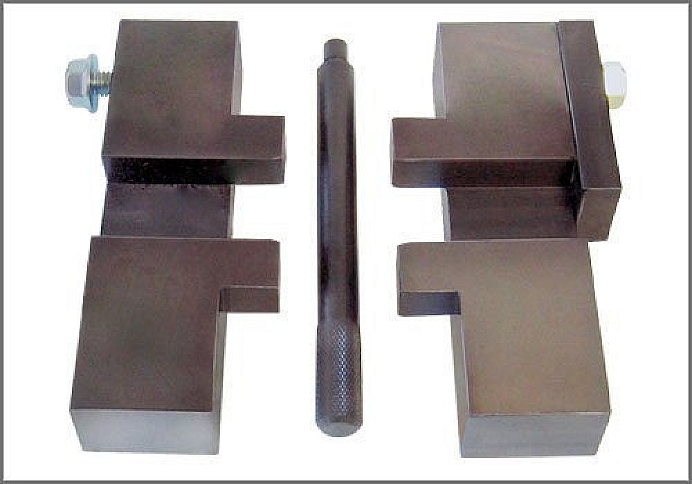
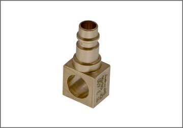
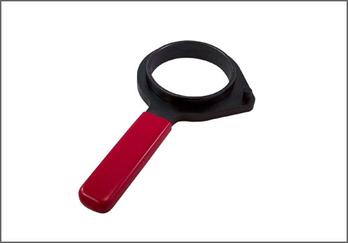
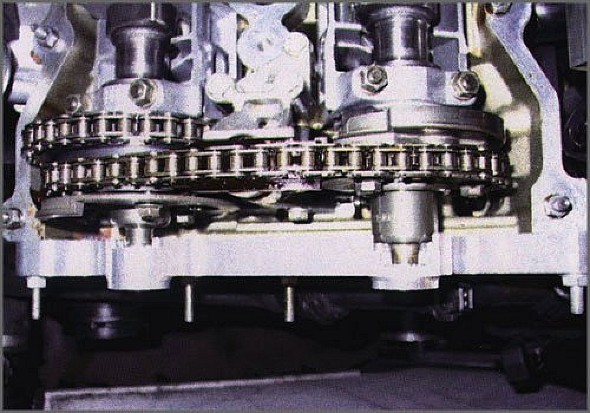
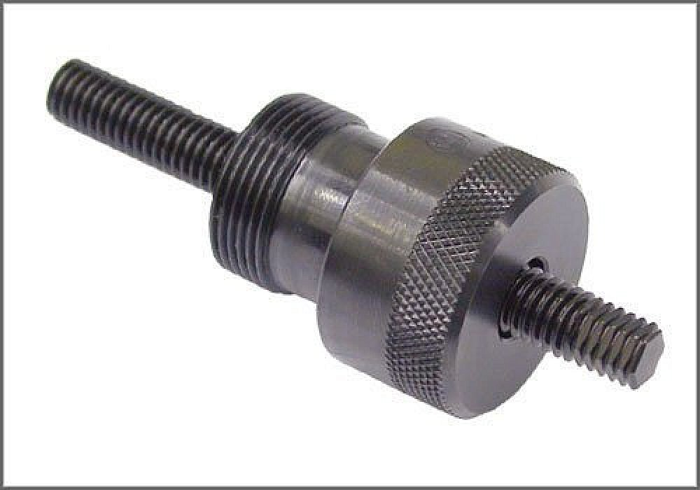
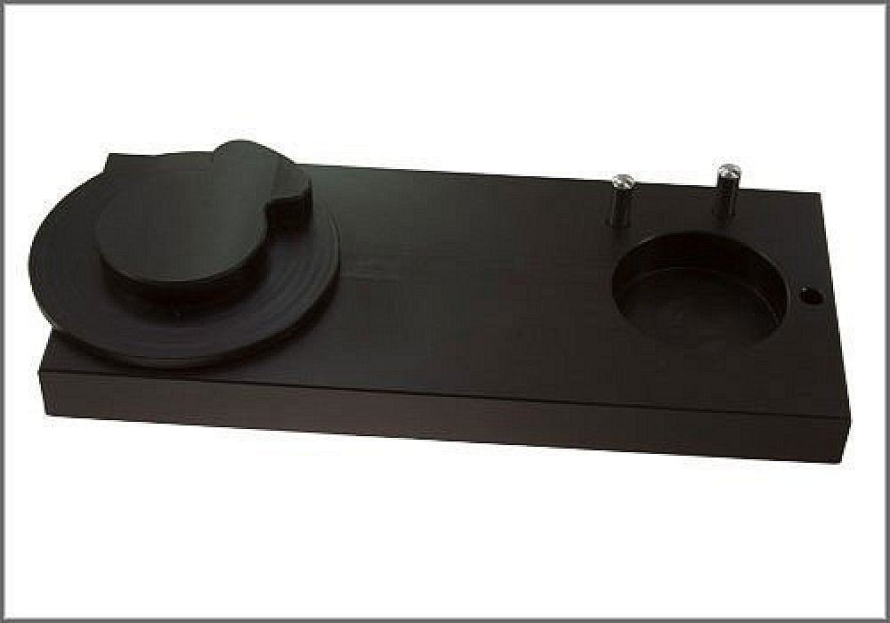
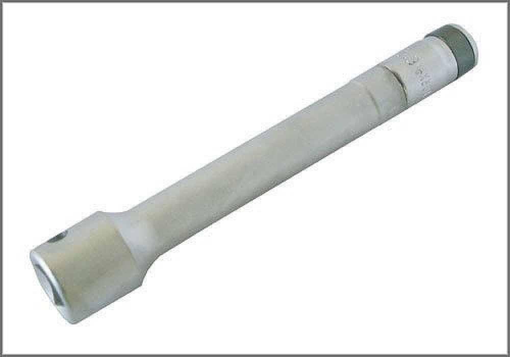

Camshaft Alignment Tool - AST Tool # BMW 400
Camshaft Alignment Tool
AST tool# BMW 400

Includes 2 blocks, swivel lock and locking pin. For setting camshaft timing. Comparable to BMW tool numbers 113240 and 112300. Applicable for M42, M44, M50, M52, M52TU, M54, M56, S50US and S52US engines.
- Made in U.S.A.
- Fits over square on back of camshafts
Contact AST for pricing.
Assenmacher Specialty Tools
1-800-525-2943
Additional Tools Possibly Required:

113450 - Vanos Air Connection

BMW 518 - Sprocket Turner

BMW 520 - Vanos Adjustment Fixture

BMW 522 - Chain Tensioner Tool

BMW 524 - Sprocket Alignment Plate

H 2925 - E12 Torx Socket